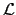
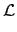
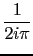
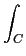

suivant: Transformée en z et
monter: Les équations différentielles
précédent: Équations différentielles : desolve
Table des matières
Index
Transformée de Laplace et transformée de Laplace inverse : laplace ilaplace
laplace et ilaplace ont 1, 2 ou 3 arguments :
l'expression que l'on transforme et éventuellement le nom de 2 variables.
L'expression est une expression de la variable courante
(ici x) ou l'expression que l'on transforme est une expression de la variable
donnèe comme deuxième argument.
laplace est la transformée de Laplace de l'expression donnée comme
argument et ilaplace est la transformée de Laplace inverse de
l'expression donnée comme argument. Le résultat de laplace et
ilaplace est une expression de variable le troisième argument ou par
défaut le second argument ou par défaut x.
On utilise la transformée de Laplace (laplace) et la transformée
de Laplace inverse (ilaplace) pour résoudre des équations
différentielles linéaires à coefficients constants, par exemple :
y + p.y + q.y = f (x)
y(0) = a y(0) = b
En notant
 la transformée de Laplace, on a les relations
suivantes :
| (y)(x) |
= |
 e-x.uy(u)du e-x.uy(u)du |
|
| -1(g)(x) |
= |
ez.xg(z)dz |
|
où C est une courbe fermée contenant les pôles de g.
On tape :
laplace(sin(x))
ici on ne précise pas la variable, alors l'expression que l'on transforme
L'expression (ici sin(x)) est une expression de la variable courante
(ici x) et la transformée sera aussi une fonction de la variable x.
On obtient:
1/((-x)^2+1)
Ou on tape :
laplace(sin(t),t)
ici on précise le nom de la variable de la fonction que l'on transforme (ici
t) et ce nom de variable sera utilisé pour la transformée de Laplace.
On obtient:
1/((-t)^2+1)
Ou on tape :
laplace(sin(t),t,s)
ici on précise le nom de la variable de la fonction que l'on transforme (ici
t) et le nom de la variable que l'on désire avoir pour la transformée de
Laplace (ici s).
On obtient:
1/((-s)^2+1)
On utilise les propriétés suivantes :
| (y')(x) |
= |
- y(0) + x.(y)(x) |
|
| (y'')(x) |
= |
- y'(0) + x.(y')(x) |
|
| |
= |
- y'(0) - x.y(0) + x2.(y)(x) |
|
On a donc si
y(x) + p.y(x) + q.y(x) = f (x) :
| (f )(x) |
= |
(y'' + p.y' + q.y)(x) |
|
| |
= |
- y'(0) - x.y(0) + x2.(y)(x) - p.y(0) + p.x.(y)(x)) + q.(y)(x) |
|
| |
= |
(x2 + p.x + q).(y)(x) - y'(0) - (x + p).y(0) |
|
soit, si a = y(0) et b = y'(0) :
aplace(f )(x) = (x2 + p.x + q).aplace(y)(x) - (x + p).a - b
La solution est alors :
y(x) = -1(((f )(x) + (x + p).a + b)/(x2 + p.x + q))
Exemple :
Résoudre :
y -6.
y +9.
y =
x.
e3.x,
y(0) =
c
0,
y(0) =
c1
Ici,
p = - 6, q = 9.
On tape :
laplace(x*exp(3*x))
On obtient :
1/(x^ 2-6*x+9)
On tape :
ilaplace((1/(x^2-6*x+9)+(x-6)*c_0+c_1)/(x^2-6*x+9))
On obtient
(216*x^3-3888*x*c_0+1296*x*c_1+1296*c_0)*exp(3*x)/1296
après simplification et factorisation (commande factor) la solution
y s'écrit :
(-18*c_0*x+6*c_0+x^3+6*x*c_1)*exp(3*x)/6
On peut bien sûr taper directement :
desolve(y''-6*y'+9*y=x*exp(3*x),y)
On obtient bien :
exp(3*x)*(-18*c_0*x+6*c_0+x^3+6*x*c_1)/6
suivant: Transformée en z et
monter: Les équations différentielles
précédent: Équations différentielles : desolve
Table des matières
Index
Documentation de giac écrite par Renée De Graeve